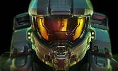
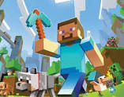
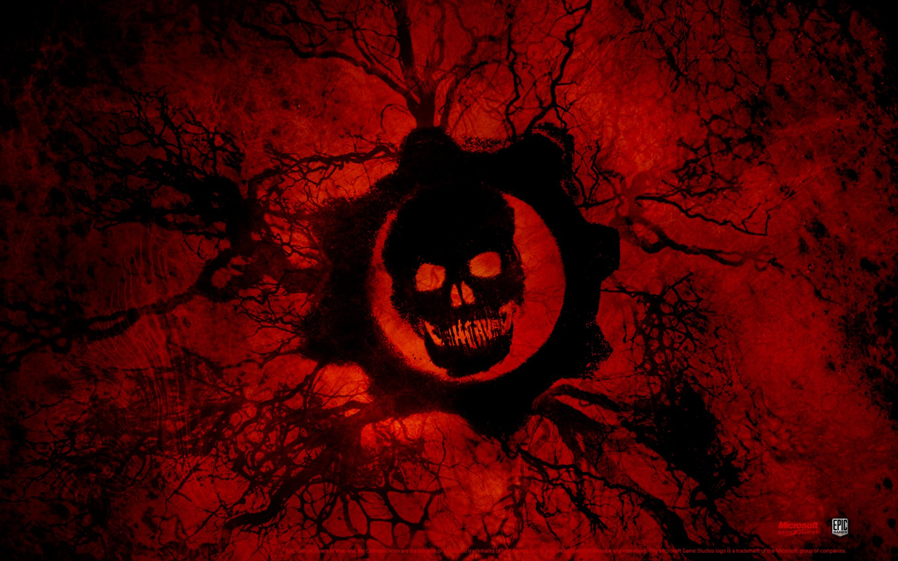
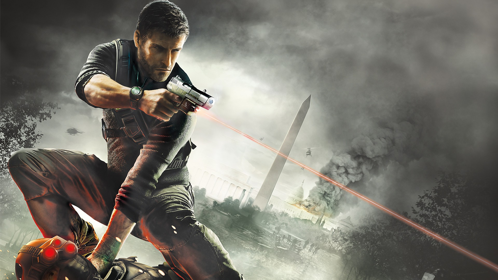
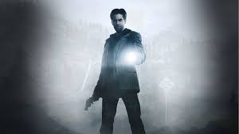

los mejores juegos de xbox son los siguientes:
1: halo

Halo es una franquicia de videojuegos de ciencia ficción creada y desarrollada por Bungie Studios hasta Halo Reach,
y gestionada ahora por 343 Industries, propiedad de Xbox Game Studios. La serie se centra en una guerra interestelar
entre la humanidad y una alianza teocrática de alienígenas conocidos como Covenant.
2: minecraft

Minecraft es un videojuego tipo sandbox, su traducción literal sería “caja de arena” y es lo que representa la
experiencia de juego. Los jugadores pueden modelar el mundo a su gusto, destruir y construir, como si estuviesen jugando en una caja de arena.
3: gears of war

Gears of War es un videojuego de disparos en tercera persona, del género acción-aventura y estrategia y terror,
desarrollado por Epic Games utilizando el motor de videojuego Unreal Engine 3. Gears of War fue publicado por Microsoft Game Studios para la consola
Xbox 360 el 1 de noviembre de 2006 en América del Norte, el 5 de noviembre en Europa, el 6 de noviembre en Australia y el 10 de enero de 2007 en Japón.
4: splinter cell conviction

Tom Clancy's Splinter Cell es una serie de condecorados videojuegos de sigilo. La primera entrega de la saga salió a
la venta en 2002, junto a sus novelas. El protagonista, Sam Fisher, es un agente altamente entrenado de una subdivisión ficticia de operaciones encubiertas
dentro de la NSA, apodada "Third Echelon".
5: alan wake

Alan Wake es descrito por Remedy como «la mente de un thriller psicológico» y «el cuerpo de un juego de acción
cinematográfico» puestos juntos. En las entrevistas, los creadores sostienen que el juego no pertenece directamente al género del survival horror.